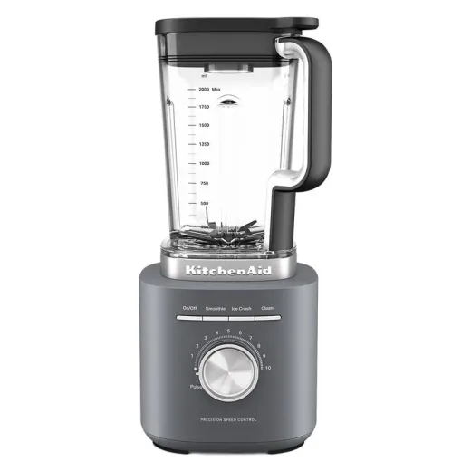
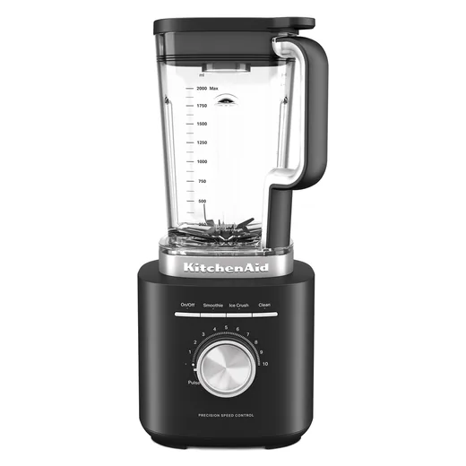
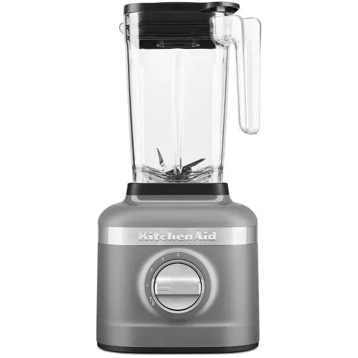
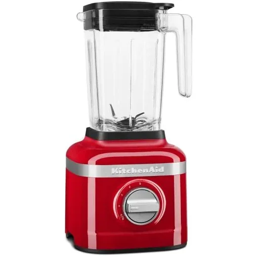
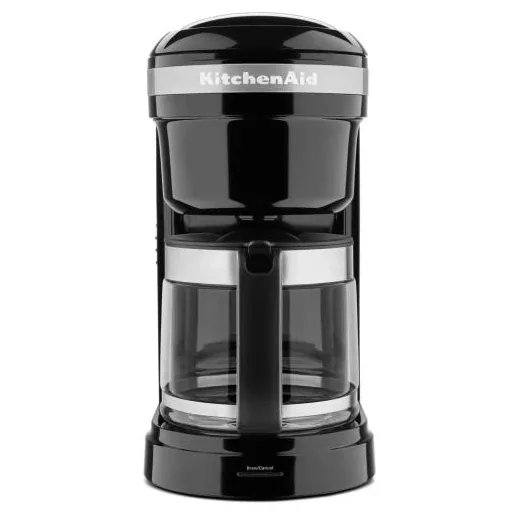
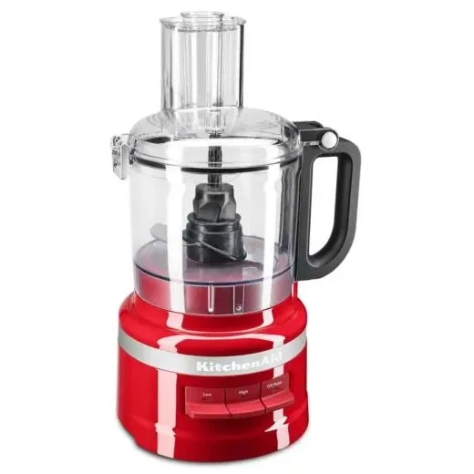
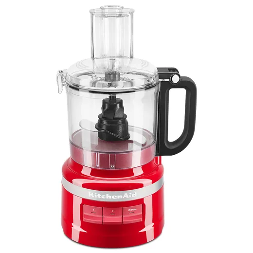
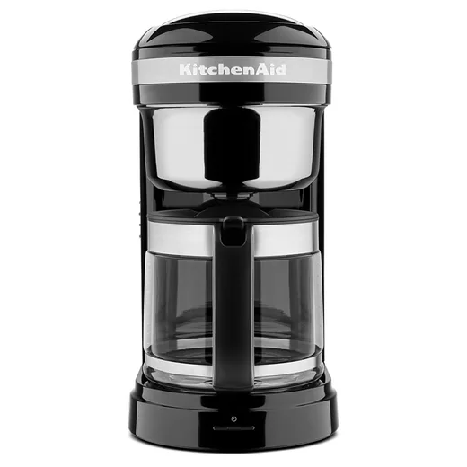
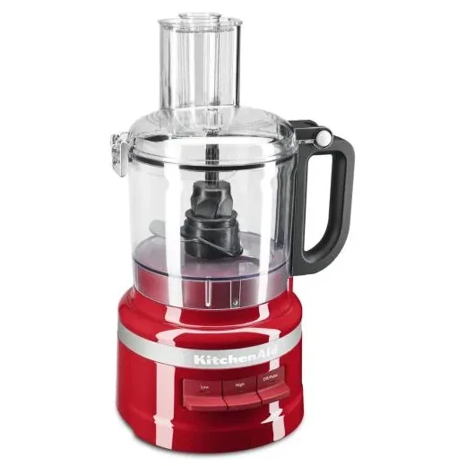

Inicio › Licuadoras y cafeteras

Kitchenaid · Modelo 7KSB2072MDG
Licuadora Pure Power Kitchenaid 7KSB2072MDG Gris, 10 Velocidades
L 3,990
En Diunsa
Precio en cada tienda
| Tienda | Precio | Antes | Disponibilidad | |
|---|---|---|---|---|
| Diunsa | L 3,990 | Disponible | Ver en tienda › |
Precios referenciales tomados de cada tienda el 14 de noviembre de 2026. El precio válido es el que muestra la tienda al comprar.
Otros licuadoras y cafeteras Kitchenaid

Licuadora Pure Power Kitchenaid 7KSB2072MBM Negro Mate, 10 VelocidadesL 3,990En Diunsa
Licuadora 3 Vel + Crush Ice Gris MateL 3,995En Lady Lee
Licuadora 3 Velocidades RojaL 3,995En Lady Lee
Cafetera 12 Tazas Digital Programable NeL 3,495En Lady Lee
Procesador de Alimentos 7TZS RojoL 3,495En Lady Lee
Procesador de Alimentos Kitchenaid Kfp0719ER, 7 Tazas RojoL 3,490En Diunsa
Cafetera de Goteo, 12 Tazas Kitchenaid Kcm1208OB, NegroL 3,490En Diunsa
Procesador de Alimentos 7 Tazas RojaL 2,995En Lady Lee